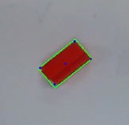

This project uses the Franka Emika Panda arm to solve a 3D bin packing problem, an optimization challenge that involves efficiently packing a set of items of different sizes into a container, minimizing wasted space and maximizing space utilization. It uses computer vision to detect the dimensions and location of the object to be packed, and it uses Moveit2 to plan the trajectories.
Detecting the dimension of the object and finding the precise location of the object are key to this project. A Realsense D435 is mounted on the robot. The object was detected and tracked using the RGB camera data and depth data provided by the Intel RealSense camera. All potential objects are red in color, and their location is determined using color masking in OpenCV to isolate the red pixels in the camera’s view. A contour was drawn around the red area, and the centroid of the contour and four more points on the edges were found. Then the grasp position and orientation of the object were calculated.
The object will be placed in the “bin,” and the robot will move to the observe position first. Once the camera detects that an object appears, the robot will move to the top of the object to ensure the object is at the center of the camera's view for better dimension detection.
To complete the grasping/placing process accurately and reliably, a custom gripper was designed, as well as the shape of the objects.
The grasping process includes three steps:
A custom wrapper interface was used to control the robot during both grasping and placing. The purpose of the wrapper interface was to simplify implementation; it offers an easier way of planning trajectories. The wrapper was written in the Making Pour Over Coffee with a Robot Arm project.
Here are some constraints in this project:
For this project, the Best-fit algorithm was used to solve this 3D rectangular packing problem. Its input is a list of items of different sizes, and the output is the location of the item to place. The best-fit algorithm uses the following heuristic:
Here is a GIF showing how this algorithm works: